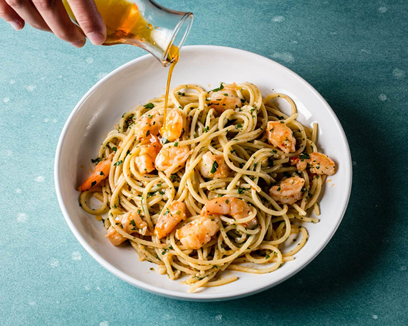
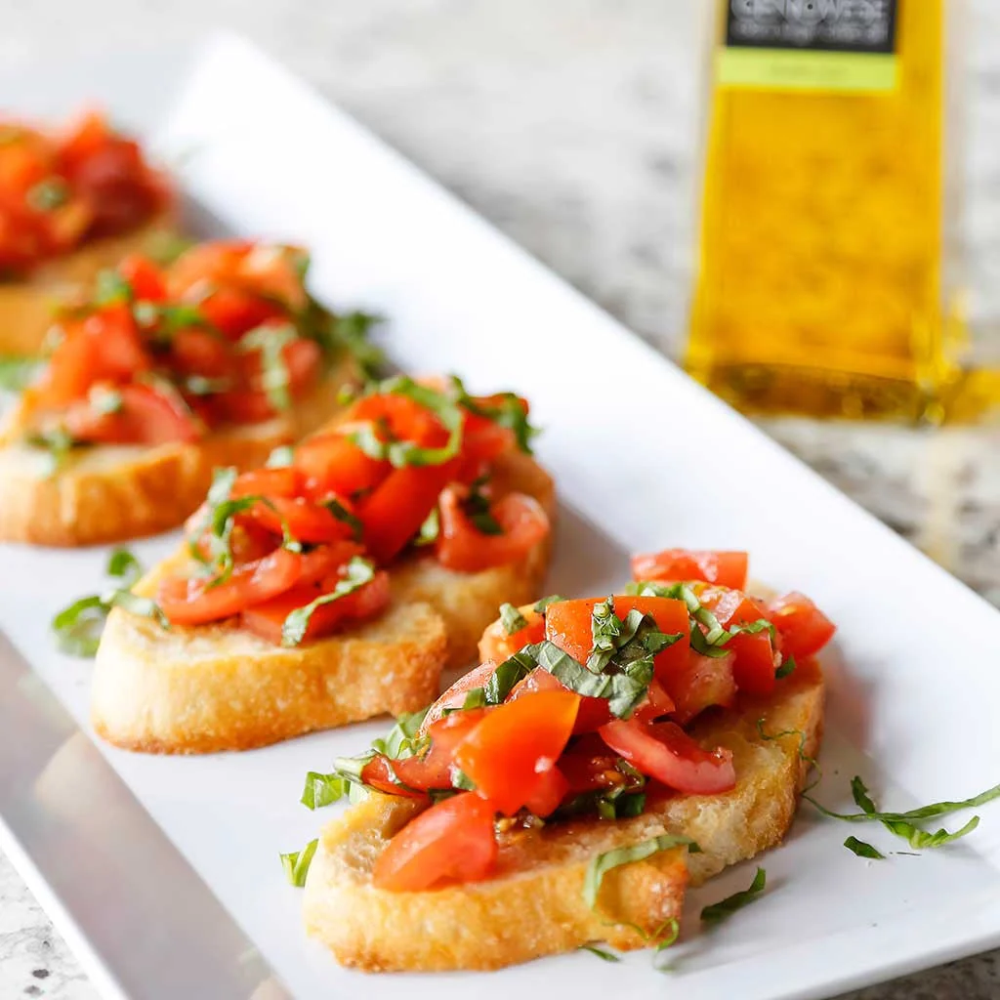
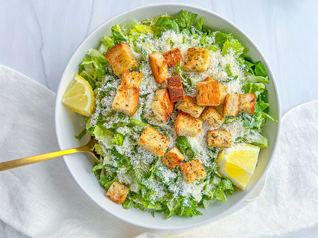
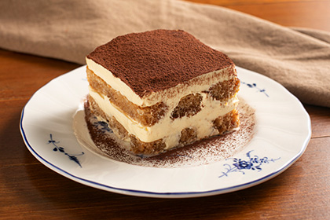

Shrimp Aglio e Olio
Aglio e olio means “garlic and oil” in Italian, and it’s a classic pasta dish made with just a few simple ingredients. This version adds shrimp for a little extra flavor and makes the dish more filling. With garlic, olive oil, and a hint of spice, it’s an easy and delicious meal that’s perfect for a quick lunch or dinner. This recipe takes about 30 minutes to make and serves about 4 to 6 people.
Servings: 4-6 people
Prep Time: 10 minutes
+ Cook Time: 20 minutes
= Total Time: 30 minutes
Ingredients:
Nutrition:
Calories: 470kcal | Carbohydrates: 64g | Protein: 22g | Fat: 15g | Saturated Fat: 3g | Polyunsaturated Fat: 1g | Monounsaturated Fat: 7g | Trans Fat: 0.01g | Cholesterol: 112mg | Sodium: 672mg | Potassium: 153mg | Fiber: 2g | Sugar: 0.1g | Vitamin A: 742IU | Vitamin C: 8mg | Calcium: 130mg | Iron: 2mg
Instructions:
- Cook the pasta. Bring a large pot of generously salted water to a rolling boil. Add spaghetti and cook for 1 minute less than the package directions – you want it just shy of al dente because it will finish cooking in the sauce. Before draining, scoop out about 1 cup of the starchy pasta water and set it aside. This is the key to building a silky sauce that actually clings to the pasta rather than sliding off.
- Toast the garlic. While the pasta cooks, heat a generous glug of extra virgin olive oil in a large frying pan over medium-low heat. Add thinly sliced garlic and the red pepper flakes and cook slowly, stirring often, until the garlic is light golden and fragrant, about 2 minutes. Watch it carefully here. Garlic goes from golden to burnt very quickly and burnt garlic will make the whole dish taste bitter.
- Cook the shrimp. Pat the shrimp completely dry with paper towels before they go in the pan – this is the step most people skip and it’s the difference between shrimp that sear with golden edges and shrimp that steam and turn rubbery. Turn the heat up to medium-high, add the shrimp to the pan in a single layer and season with salt and pepper. Cook for about 1 to 2 minutes per side until they’re pink, opaque and lightly golden in spots. Squeeze over the fresh lemon juice in the last 30 seconds of cooking.
- Bring it all together. Remove the pan from the heat. Add the drained pasta directly to the pan along with the chopped parsley. Toss everything together, then add the reserved pasta water a few tablespoons at a time, tossing constantly. The starchy water will emulsify with the olive oil to create a glossy, silky sauce that coats every strand of spaghetti. Keep adding and tossing until the pasta looks saucy and glossy, not dry or oily.
- Season and serve. Taste and adjust the seasoning with salt and pepper. Serve immediately with a grating of parmesan if you like, an extra drizzle of olive oil and a squeeze of lemon on the side.
Source: Simply Delicious's Easy Shrimp Aglio e Olio Pasta Recipe.
Perfect pairings with this dish:
-

Tomato Basil Bruschetta
This fresh and flavorful appetizer is a great way to start your meal, with juicy tomatoes, fragrant basil, and crispy bread.
-

Lemon Parmesan Salad
Light and refreshing, this salad adds a zesty citrus flavor that balances the rich garlic and olive oil in the pasta.
-

Tiramisu
Finish your meal with this classic Italian dessert, featuring layers of coffee-soaked ladyfingers and creamy mascarpone for a sweet and satisfying treat.